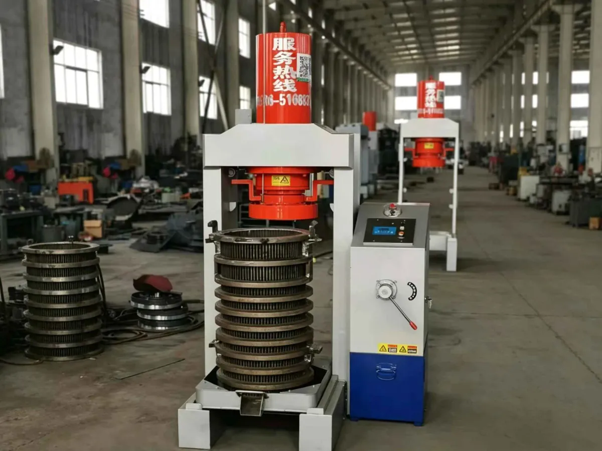
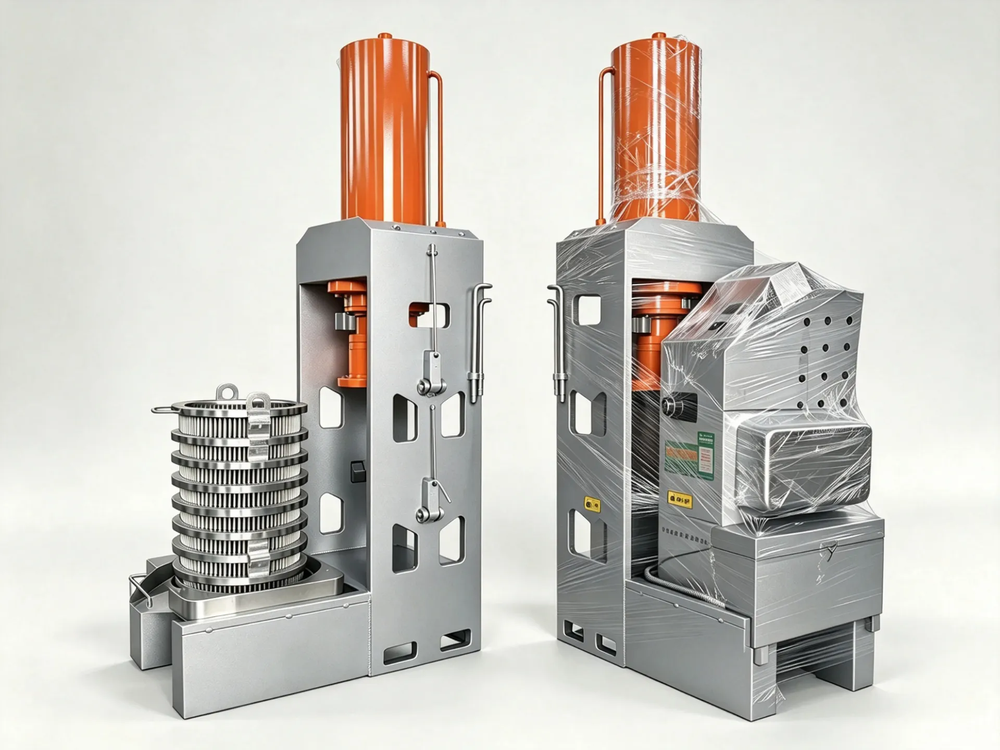
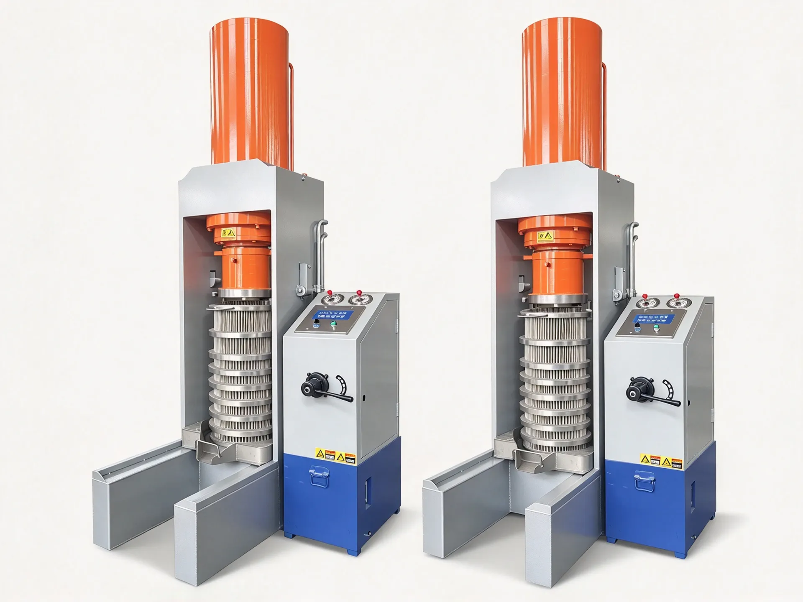
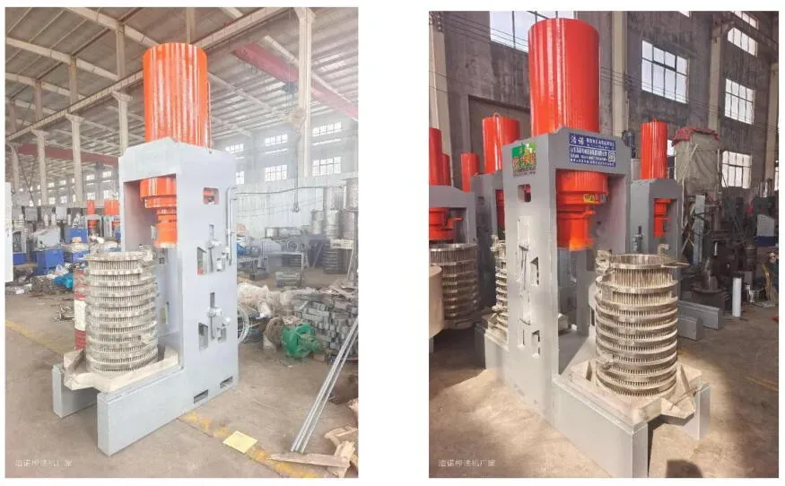
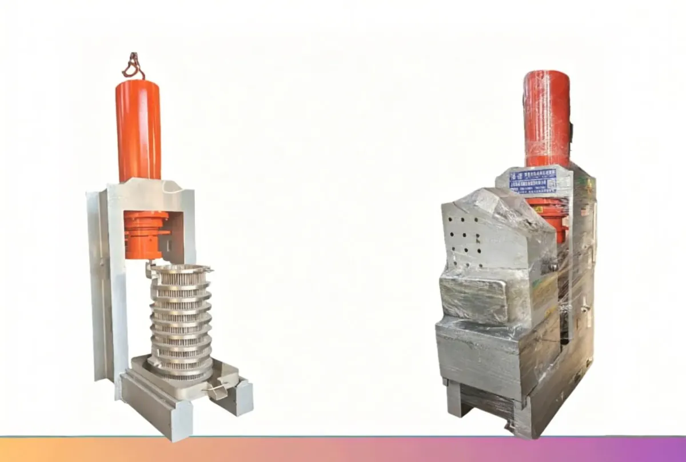
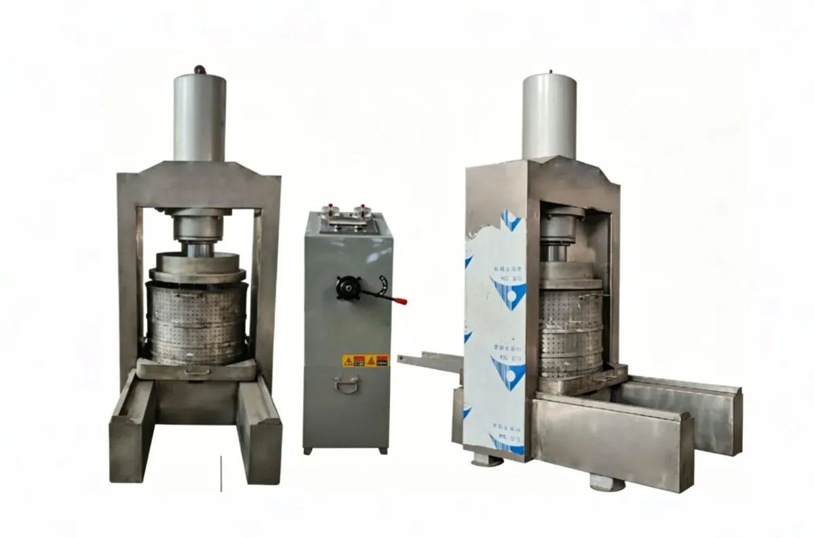
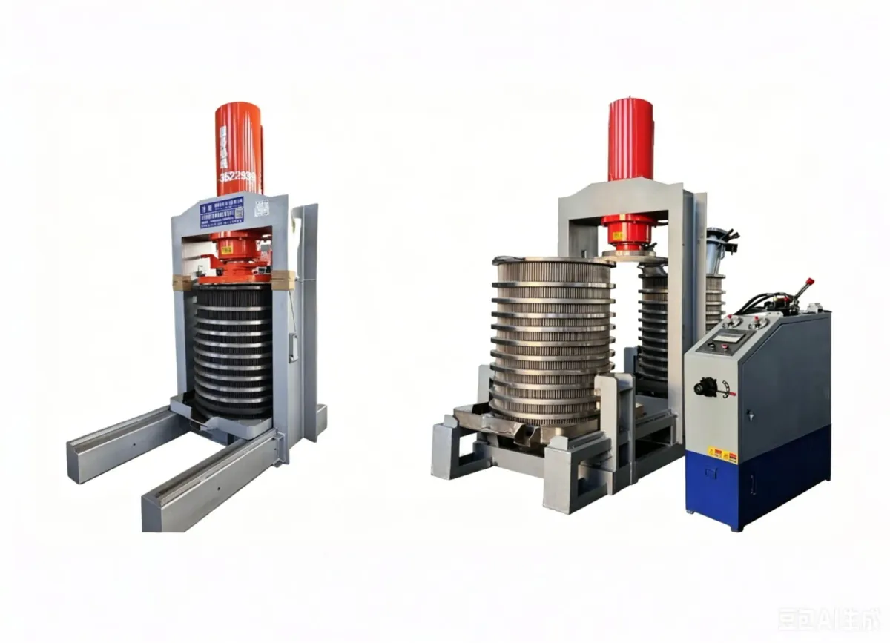

液压榨油机Hydraulic Oil Presses · 8款
HN300
HN300 小型液压榨油机

300吨压力，适合油坊起步阶段。20–60kg/批次，热榨冷榨通用，1.1kw电机。
适用油料：sesame · peanut · rapeseed · tea seed
| System Pressure | 60 MPa |
| Pressing Force | 300 Tonnes |
| Motor Power | 2.2 KW |
| Machine Weight (Single/Double) | 1,2 / 1,5 Tonnes |
| Cylinder Outer Diameter | 300 mm |
| Piston Inner Diameter | 240 mm |
| Tabung Press Standard Inner Diameter | 390 mm (customizable) |
| Tabung Press Standard Height | 800 mm (customizable) |
| Cylinder Standard Stroke | 850 mm (customizable) |
HN325
HN325 标准型液压榨油机（畅销款）

工厂主打型号，325吨压力，20–100kg/批次，27MPa饼面压力。热榨30–40分钟/批次，冷榨约2小时。单缸1.42吨，双缸1.72吨。
适用油料：sesame · peanut · walnut · tea seed · flaxseed · rapeseed · sunflower seed · soybean
| Pressing Force | 325 Tonnes |
| Cake Surface Pressure | 27 MPa (Ø390 tabung press) |
| Hydraulic System Pressure | 60 MPa |
| Tabung Press Diameter | Ø390 mm standard (customizable) |
| Tabung Press Height | 800 mm standard (customizable) |
| Piston Stroke | 850 mm |
| Batch Capacity | About 20–100 kg per batch (100 kg max, crushed seed) |
| Power | 380V / 50Hz (415V optional) |
| Motor Power | 2.2 KW |
HN365
HN365 商业级液压榨油机

365吨压力，适合商业油厂，日处理量更大，双缸配置可选。
适用油料：peanut · sesame · rapeseed · camellia seed · walnut · flaxseed · sunflower · soybean · almond
| Rated Pressing Force | 365 Tonnes |
| Cake Surface Pressure | 30 MPa |
| Frame | 3 cm high-strength steel plate |
| Structure | Vertical, single or double tabung press |
| Working Mode | Manual / Semi-automatic, switchable |
| Pressing Process | Hot pressing and cold pressing |
| Motor Starting | Star-delta (Y-Δ) reduced-voltage start |
| Tabung Press Configuration | Single or double station |
| Applicable Seeds | Peanut, sesame, rapeseed, camellia (tea) seed, walnut, flaxseed, sunflower, soybean, almond |
HN426
HN426 冷榨液压榨油机（500吨）

500吨冷榨专用，70MPa系统压力/42MPa饼面压力。低温压榨保留营养，主打椰子VCO、核桃油、亚麻籽油等高端油品。
适用油料：tea seed · rapeseed · peanut · soybean · flaxseed · lacquer oil seed · walnut kernel · in-shell walnut · apricot kernel · yellowhorn · tiger nut
| System Pressure | 70 MPa |
| Pressing Force | 500 Tonnes |
| Motor Power | 2.2 KW |
| Machine Weight (Single/Double) | 2,4 / 2,7 Tonnes |
| Cylinder Outer Diameter | 426 mm |
| Piston Inner Diameter | 320 mm |
| Tabung Press Standard Inner Diameter | 390 mm (customizable) |
| Tabung Press Standard Height | 800 mm (customizable) |
| Cylinder Standard Stroke | 850 mm (customizable) |
HN500
HN500 超高压液压榨油机（旗舰款）

600–620吨旗舰机型，最强压力，核桃、杏仁等硬壳油料单周期直接压透。
适用油料：tea seed · rapeseed · peanut · soybean · flaxseed · lacquer oil seed · walnut kernel · in-shell walnut · apricot kernel · yellowhorn · tiger nut
| System Pressure | 75 MPa |
| Pressing Force | 620 Tonnes |
| Motor Power | 2.2 KW |
| Machine Weight (Single/Double) | 3,5 / 3,88 Tonnes |
| Cylinder Outer Diameter | 500 mm |
| Piston Inner Diameter | 360 mm |
| Tabung Press Standard Inner Diameter | 390 mm (customizable) |
| Tabung Press Standard Height | 800 mm (customizable) |
| Cylinder Standard Stroke | 850 mm (customizable) |
HN325/355 Sesame
定制款芝麻专用液压榨油机

芝麻定制款——Ø300mm窄桶集中压力，47–51MPa饼面压力，42–54%出油率。
适用油料：sesame · in-shell walnut · tea seed · rapeseed · peanut · soybean · lacquer oil seed · flaxseed
| Motor Power | 2.2 KW |
| Cylinder Outer Diameter (325/355) | 325 / 360 mm |
| Cylinder Inner Diameter (325/355) | 260 / 280 mm |
| Cylinder Stroke | 850 mm |
| System Pressure (325/355) | 60 / 63 MPa |
| Cake Surface Pressure (325/355) | 47 / 51 MPa |
| Tabung Press Inner Diameter | 300 mm |
| Tabung Press Height | 800 mm |
| Machine Weight (325/355) | ~1,4 / ~2,1 Tonnes |
300 Type Coconut
300型椰奶液压榨油机

300型椰奶/椰油专用液压榨油机，定制桶形。
适用油料：coconut milk
| Motor Power | 2.2 KW |
| Cylinder Outer Diameter | 300 mm |
| Cylinder Inner Diameter | 240 mm |
| Cylinder Stroke | 700 mm |
| Pressing Force | 300 Tonnes |
| System Pressure | 60 MPa |
| Cake Surface Pressure | 10.83 MPa |
| Tabung Press Inner Diameter | 600 mm |
| Tabung Press Height | 600 mm |
HN325 Large Tabung Press
HN325 大桶压滤机（椰子/乳木果）

HN325加大桶径版本（Ø500mm），针对椰子肉、乳木果设计，20–35kg/批次。
适用油料：animal oil residue · plant oil residue · oil sludge · textile sludge · fruit vegetable dehydration · oil field sludge
| Motor Power | 2.2 KW |
| Cylinder Outer Diameter | 325 mm |
| Cylinder Stroke | 850 mm |
| System Pressure | 60 MPa |
| Cake Surface Pressure | 10.64 MPa |
| Tabung Press Inner Diameter | 630 mm |
| Tabung Press Height | 1000 mm |
| Machine Weight (Single/Double) | ~2,5 / ~3,5 Tonnes |
| Equipment Dimensions (Single/Double) | 1400×2100×2900 / 2700×2100×2900 mm |